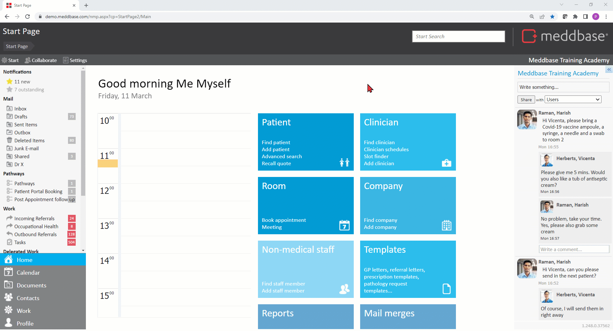
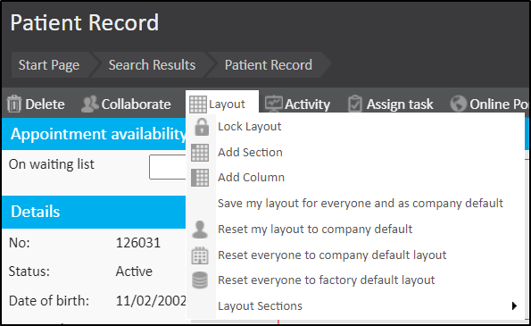

Meddbase allows users to create custom or meta fields on Company, Patient and Medical Person record pages. These custom fields allow capturing information in free text format that may not have a designated field in the standard Meddbase application. Information captured in these fields can be reported on. Furthermore, these fields can be dragged to wherever it is useful on a respective record page.
What is the purpose of the article?
The following article is a step-by-step explanation of how to create a meta-field in a new section. This is applicable to areas in which you see the "Layout" button.
For the purpose of this article we will add a meta-field to a Patient Record.
Sections can be added to both PatientRecord and the Patient Details Page. However, sections can only be added to the Details Page of a Company or Clinician.
Adding a section to a patient record page layout
To add a meta-field we first need to add a custom section to a record page. To do this:-
From the Start Page, search for a patient click on the search result (any patient will do).
On the Patient Record page click Layout on the top-left hand-side.
Select Unlock Layout for Editing.
Click Layout again and select Add Section.
The new section will be created at the bottom-right hand-side of the page.
Click the arrow in order to open up the additional options for this newly created section.
Give this section an appropriate name and adjust its height (40 should be alright for one field or larger if you wish to place more fields within this section)
You can drag it wherever you want.

Adding a field with a label and a key
Once the custom section is added to the record page and dragged to the desired position you can add a field(s) to the section and describe it adequately. To do this:-
Click the arrow in the Section heading bar.
Click on Add Field and add a:
Label (the text displayed)
Key (internally used, it’s a good idea to give the same name as the label without spaces)
Save the field.
If you want to add other fields to the section repeat the step 2 and 3. Once you are happy with your Sections and overall Layout, click the Layout button again and chose from the options provided. In this case, we wish to save this layout for all patients across the chamber. In order to do this, select the Save my layout for everyone and as the company default.

Once you are finished, click Layout again and select Lock Layout.